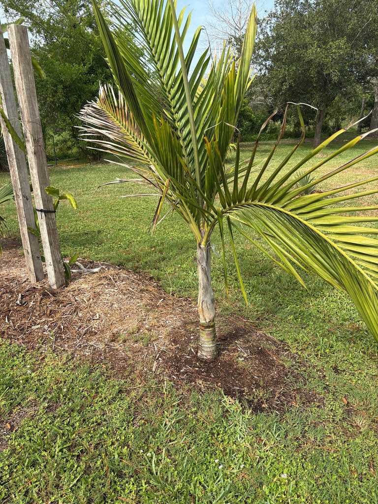

- The entire known wild range of this palm occupies only about 8 square kilometers on one small island, with fewer than 100 mature individuals estimated in the wild. The palm in front of you may be more numerous in cultivation than in its native forest.
- Look for the white, woolly crownshaft: unlike most crownshaft palms whose shafts are smooth and green, this one is blanketed in dense felt-like tomentum that gives it an almost frosted white appearance visible from a fair distance. That white column just below the crown is one of the most distinctive signatures in the entire genus.
- It is the only New Caledonian palm that grows naturally on raised coral limestone — a porous, alkaline substrate that creates a very different environment from the mineral-rich rocks of New Caledonia's main island. Lifou is essentially an uplifted coral island, and this palm is uniquely adapted to it.
- C. nucele is the odd one out in Cyphophoenix in more ways than one: it is the only member native to the Loyalty Islands, separated from its three relatives by open ocean — and it is visually distinctive too, with stiff, rigidly erect fronds that stand nearly straight up, while its closest relative C. elegans holds gracefully arching, downward-curving leaves.
The Lifou Palm occurs naturally only on Lifou Island — known as Drehu to its indigenous Kanak inhabitants — in New Caledonia's Loyalty Islands, a chain of raised coral islands roughly 100 kilometers east of the New Caledonian mainland. The entire known wild range fits within about 8 square kilometers of moist forest, within a single locality near the village of Jozip.
It is the only New Caledonian palm that grows on raised coral limestone substrate — every other member of the genus Cyphophoenix occurs on schistose or serpentine rocks on the main island. Kew's Plants of the World Online confirms its native range as New Caledonia (Loyalty Islands), and the IUCN lists it as Vulnerable.
Seeds reached the United States through collectors and botanical gardens, and the species is now in limited cultivation in subtropical Florida, Hawaii, and coastal California — still rare enough that most palm enthusiasts have never seen a specimen outside of a specialist collection.
- The genus Cyphophoenix contains four species, all endemic to New Caledonia and its immediate outlying islands. C. nucele is the outlier of the group in more ways than one: separated from its three relatives by a long stretch of open ocean, it colonized a fundamentally different rock type and is the only species in the genus to have established itself beyond the main island.
- The species was formally described and named by American botanist Harold E. Moore in 1976. Moore was one of the most prolific palm taxonomists of the twentieth century, responsible for describing hundreds of palm species; Cyphophoenix nucele was among his later contributions.
- In the wild, the Lifou Palm faces threats from introduced rats, which can destroy seeds, and feral pigs, which disturb the forest floor and seedlings. A conservation program involving a local NGO and the Jozip tribe on Lifou has monitored the population and documented good natural regeneration — an encouraging sign for a palm with such a tiny, single-island range.
- Locally on Lifou, the palm's growing heart has historically been eaten — a practice documented for crownshaft palms across the Pacific. Harvesting the heart kills the tree, which is an especially consequential practice for a species confined to a single tiny locality.
The orange-red fruits of Cyphophoenix nucele likely contribute to the food web on Lifou, but species-specific fruit dispersal has not been well documented for this palm. In Florida cultivation, no specific wildlife relationships have been recorded.
Because it has no co-evolutionary history with Florida's fauna, it does not function as a larval host for local butterflies or moths. The inflorescences may attract generalist insect pollinators when in bloom, but visitors looking for the park's richest pollinator habitat will find it among the native plantings.
Propagation is by seed. Seeds germinate readily under suitable cultivation conditions, making the species comparatively straightforward to raise once viable seed is available — despite its rarity in the wild.
Inflorescences are infrafoliar — they emerge from below the crownshaft — and are erect, whitish-green, and 20 to 35 inches (50 to 90 cm) long. One to two inflorescences are produced per node.
The fruit is ellipsoid and turns orange-red at maturity, with a smooth endocarp enclosing a single seed. Fruits are not a documented food source for people.
Pinnate (feather-form) fronds held stiffly and rigidly upright — one of C. nucele's most reliable field signatures. This is a sharp contrast to its sister species C. elegans, whose leaves curve gracefully downward. The leaflets are flat, dark green above and silvery below, and the petiole is nearly absent, so fronds appear to emerge almost directly from the crownshaft.
The crownshaft — the smooth, tubular column formed by the tightly wrapped leaf bases just below the crown — is 20 to 24 inches (50 to 60 cm) long and covered in dense whitish, felt-like woolly hairs (tomentum), giving it a striking white, almost frosted appearance, except at its base.
The trunk is solitary, slender, greenish-yellow, and prominently ringed with leaf scars; it is slightly wider at the base and reaches about 8 inches (20 cm) in diameter at maturity.
Start at the crownshaft — the bright white, woolly column just below the crown is the most distinctive feature on the whole palm, visible from a fair distance. Notice how the fronds stand stiffly upright rather than arching outward; this rigid, brush-like crown silhouette is one of C. nucele's primary field signatures, and it immediately separates it from its arching-leafed relative C. elegans.
Look closely at the underside of the leaflets for a silvery sheen that contrasts with the deep green upper surface. The trunk is slender and neatly ringed; if the palm is fruiting, look for small ellipsoid fruits turning from green to orange-red among the lower fronds.
The growing heart of this palm is edible — crownshaft palms across the Pacific have been harvested for palm heart for centuries, and Cyphophoenix nucele is among them. That said, harvesting the heart kills the palm, which is a particularly weighty consequence for a species with such a tiny, single-island natural range.
The orange-red fruit is not a documented human food source and should not be eaten. No known toxicity to people, dogs, or cats.
This is a genuinely uncommon palm in American cultivation, and its presence here is more significant than its quiet appearance suggests. A species with fewer than 100 mature individuals in a tiny wild range is being maintained here far from its native island — exactly the kind of living collection that botanical gardens exist to provide for rare plants.
Cold-sensitive; this species is generally suited to USDA Zones 10b–11 and an unusually hard freeze in Bradenton may cause foliage damage. That makes this specimen a useful local test of the species' cold tolerance at the northern edge of its comfort zone.


- © Randall Carter (CC-BY-NC), via iNaturalist